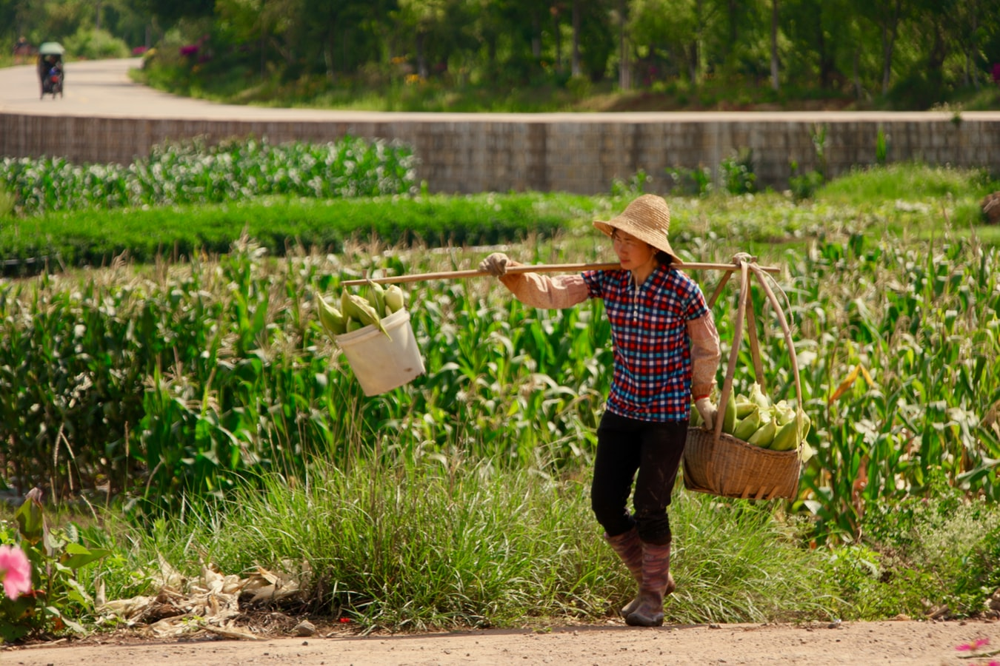
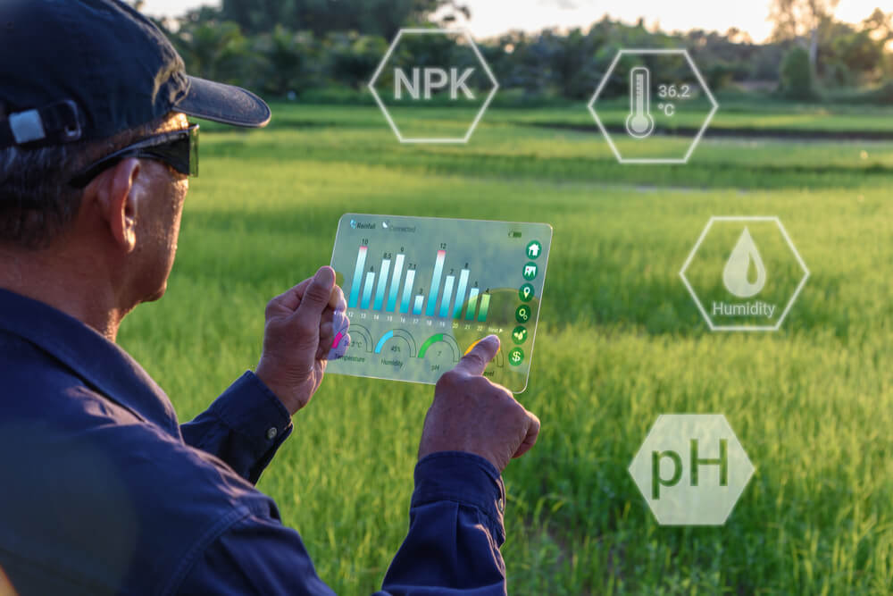
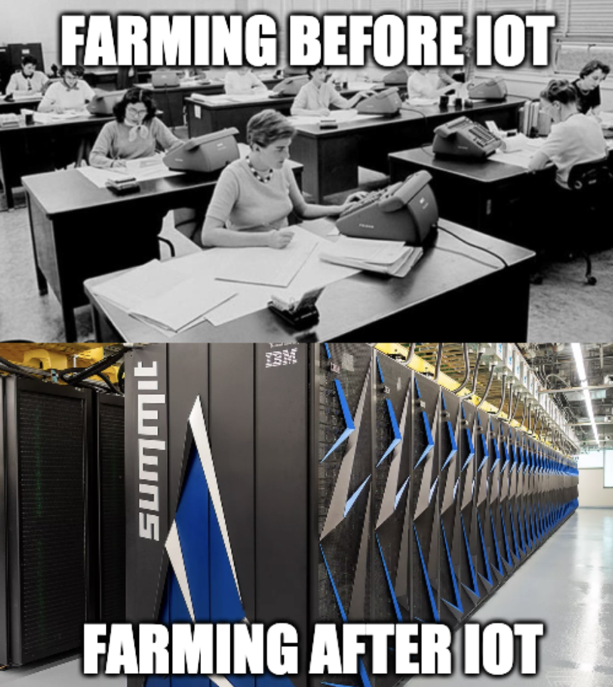

Hundreds of years ago, the typical human being was a farmer. Most people's primary concern was to go to work on the farm so they could produce enough food to feed their families and sell whatever was leftover for some money. 200 years ago 90% of the population was producing food.

But a lot has changed since then. In the modern world, 2% of the population produces all of the world's food. Farmers can provide food for 10x the amount of people they could in the 1900s.
While there are many different factors that helped farmers get better at what they do, IoT is definitely one of the main causes of increased efficiency.
IoT provides farmers with one of the most valuable assets people can have these days - data.
Here are some of the biggest ways that IoT is revolutionizing the agriculture industry.
Greenhouse Automation
In the past, greenhouses, or really any type of garden, had to be completely operated through manual labor.
If there was a group of crops that needed watering, someone had to go in and water it some amount they thought was right. If it got too hot for the plants to survive, someone had cool down the greenhouse. If there isn't anyone constantly monitoring the plants, they'll die.
Now thanks to IoT, you can just stick a moisture sensor in the dirt to adjust the watering levels. You can put a temperature sensor around the plants, and have automated systems that adjust the temperature to optimize crop yield.
There's no limit to the number of things farmers can track. They track everything from light exposure to ventilation to create perfect incubators to grow food.

The sensors collect tons of data that farmers can use to learn more about their farm. They can learn about new trends and constantly make their farms more and more efficient.
Farmers don't have to do much to maintain their greenhouses anymore. They just plant the seeds, turn on the system, and walk away till they get an alert that the crops are ready for harvest.
Drone Irrigation
A lot of us have seen hobbyists flying their drones around in public, taking pictures and competing in drone races.
Companies like DJI have taken drones beyond just photography and built industrial drones that can irrigate acres of field in a fraction of the time that it takes a regular farmer.
They took this technology to the Philippines and it had an unbelievable impact on their farms. Here's a video from DJI on the impact of their irrigation drones:
I totally recommend you watch it, but in case you didn't, I'll quickly summarize the main takeaways from the video:
- Farmers could create flight plans by walking the path around the field.
- The drones were able to accomplish a day's worth of human worker irrigation in 2 minutes
- They provided aerial footage that could show anything wrong with the crops like discoloration.
- IoT sensors on the drone let it always be an even height over the ground so that the spraying is effective. (More effective than manual irrigation).
- The drones save farmers when they are understaffed in emergencies.
I honestly think that its crazy how a drone does a day's work in 2 minutes 🤯.

Basically, at the end of the day, these drones are saving farmers time and money while making them more efficient.
Livestock Monitoring
I already mentioned how IOT helps farmers monitor their crops, so why not monitor their livestock too?

IoT is a game-changing implementation for farmers and ranchers.
These days, farmers can buy bio-capsules that they can feed to cows to track their animals' temperature, drinking cycles, stomach pH levels, nutrition, and location.
This helps farmers instantly know when something is wrong with their livestock and where they are if they go missing.
Before, farmers would wait to check on their animals during roundup, by which time animals could have run miles away in any direction, especially if its a horse. IoT lets them set virtual boundaries on their pasture. If an animal wanders out, the farmer gets an alert and the location of the animal so they can bring it back quickly.
These IoT devices even give data to farmers that help them increase the chances of successful livestock breeding.
Overall, Before they'd have to drive around the farm and individually check on the health of each animal. Even then, they might not realize if an animal is sick in time to save it. Now they can just sit back on their couch and only go to the animal if they get an alert on their phone, all while being sure that they can help them in time.

IoT makes farming life more efficient, cheaper, and relatively relaxing.
Key Takeaways / TLDR:
- IoT is making farming quicker, cheaper, more efficient, and easier.
- Sensors and automatic systems can allow greenhouses to automatically optimize growing conditions.
- Drones are making irrigation extremely faster without the need for manual labour while providing monitoring data on fields of crops
- Biotrackers let farmers keep track of their animals' health and know where they are at all times.